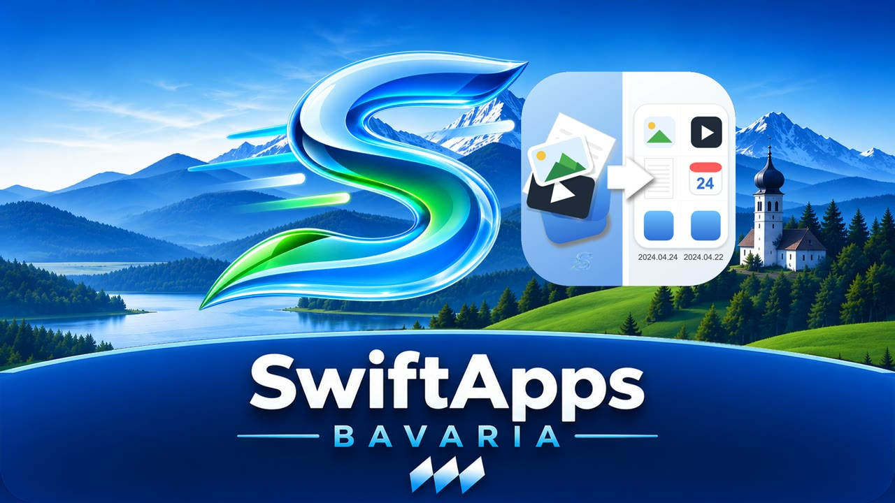
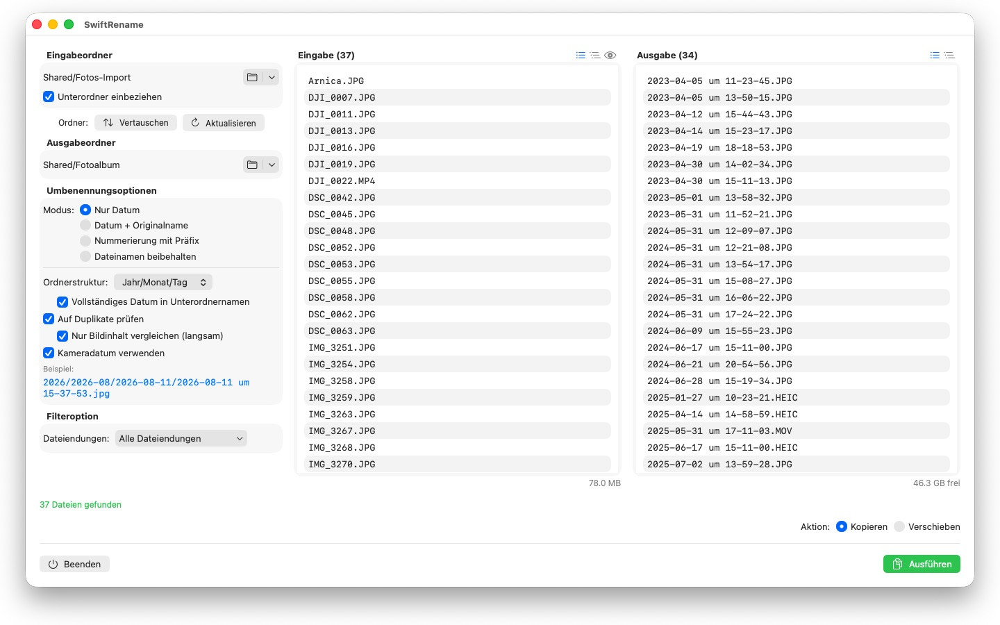
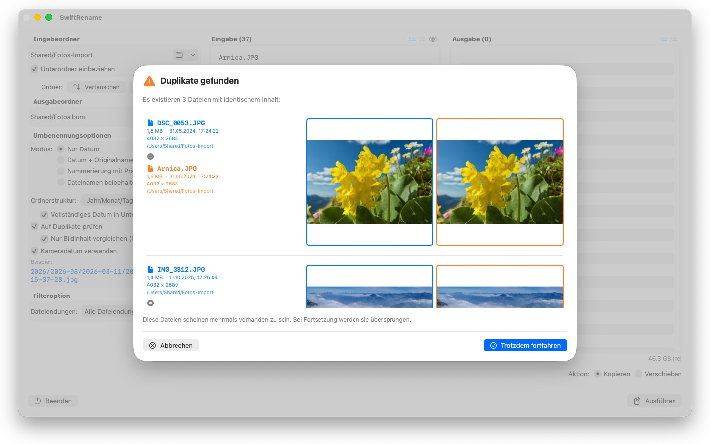

Hunderte Fotos und Dateien in einem Rutsch umbenennen – nach Kameradatum, nummeriert oder in Jahres- und Monatsordner sortiert. Duplikate werden automatisch erkannt.

Den Film ansehen – 3 Minuten auf YouTube

SwiftRename ist ein leistungsstarkes Werkzeug, um Dateien auf dem Mac stapelweise umzubenennen, zu kopieren und zu verschieben. Ordner wählen, festlegen, wie die neuen Namen aussehen sollen, Live-Vorschau prüfen – ausführen.
UMBENENNUNGSMODI
- Nur Datum: Dateien nach ihrem Datum benennen (z. B. 2024-01-15 um 14-30-00)
- Datum + Originalname: Datum voranstellen, der Originalname bleibt erhalten
- Nummerierung mit Präfix: fortlaufende Nummerierung mit eigenem Präfix (z. B. Reise_0001)
- Dateinamen beibehalten: Namen unangetastet lassen und nur in Ordner einsortieren
ORDNERSTRUKTUR
Dateien automatisch in Ordner nach Jahr, Monat oder Tag sortieren – auf Wunsch mit dem vollständigen Datum in jedem Unterordnernamen (z. B. 2026/2026-02/2026-02-20). Dateien aus mehreren Jahrzehnten bekommen zusätzlich Dekaden-Ordner. Oder „Beibehalten" wählen: Dann wird die Unterordner-Struktur des Quellordners ins Ziel gespiegelt.
KAMERADATUM
Fotos und Videos werden nach dem Moment benannt, in dem sie tatsächlich aufgenommen wurden: SwiftRename liest das Kameradatum (EXIF) – aus RAW-Formaten aller gängigen Kamerahersteller (Canon, Nikon, Sony, Fujifilm u.v.m.) sowie aus HEIC, JPEG, PNG, TIFF und gängigen Videoformaten. Hat eine Datei kein Kameradatum, wird ihr Erstellungsdatum verwendet.
DUPLIKATERKENNUNG
Duplikate werden anhand von Dateigröße und Inhalt erkannt – unabhängig vom Erstellungsdatum; dasselbe Foto mit anderem Zeitstempel rutscht also nicht durch. Ein optionaler Bildvergleich findet sogar Fotos, die von anderen Apps neu gespeichert wurden. Miniaturbilder zeigen beide Dateien im direkten Vergleich; Duplikate werden automatisch übersprungen.
WEITERE FUNKTIONEN
- Kopieren oder Verschieben mit einem Klick – auch Umbenennen am Ort im selben Ordner
- Schneller Zugriff auf zuletzt verwendete Eingabe- und Ausgabeordner
- Unterordner einbeziehen; Dateilisten als flache Liste oder Ordnerbaum
- Dateiendungen filtern mit Mehrfachauswahl
- Live-Vorschau der neuen Namen, bevor irgendetwas angefasst wird
- Widerrufen und Wiederholen ganzer Vorgänge (Cmd+Z)
- Fortschrittsanzeige mit Dateiname und Prozent – jederzeit abbrechbar
- Freier Speicherplatz wird vor dem Start geprüft
- Ordner per Drag & Drop direkt aus dem Finder
24 Sprachen: Deutsch, Englisch, Tschechisch, Kroatisch, Niederländisch, Finnisch, Französisch, Ungarisch, Italienisch, Japanisch, Koreanisch, Norwegisch (Bokmål), Persisch, Polnisch, Portugiesisch, Rumänisch, Russisch, Spanisch, Schwedisch, Thai, Türkisch, Ukrainisch, Chinesisch (vereinfacht und traditionell).
Alles bleibt auf deinem Mac. Keine Netzwerkverbindungen, keine Konten, keine Datenerhebung.
- Erfordert macOS 12 oder neuer
- 24 Sprachen
- Support: SwiftAppsBavaria@gmx.net
Weitere Apps
sCollect
Musik, Filme, Hörbücher, E-Books und andere Sammlungen in einer Mediathek ordnen.
sCollectPlay
Der Player zur Mediathek: Musik, Filme, Hörbücher und Podcasts einfach aus einem Ordner, aus einer iTunes-XML oder aus einer sCollect-Mediathek abspielen — an den Tags der Dateien ändert sich dabei nichts.
sName2Date
Das Datum aus dem Dateinamen als Aufnahmedatum in Fotos, Filme und Tonaufnahmen schreiben — damit sich eine Datei wie IMG_20240115_103000.jpg in jeder Fotoverwaltung richtig einsortiert.
sName2Date Lite
Die Ausgabe für eine Datei je Durchgang: das Datum aus dem Dateinamen als Aufnahmedatum in ein Foto, einen Film oder eine Tonaufnahme schreiben, von Hand setzen, den Namen in die ISO-Schreibweise bringen und alles mit ⌘Z zurücknehmen — dieselben Fähigkeiten wie sName2Date, nur ohne ganze Ordner.
sVectorLift
Alte Vektor-Clipart öffnen, ansehen und als SVG sichern — CorelDRAW, Windows Metafile und CGM.
sCollectPlay Lite
Die schlanke Ausgabe von sCollectPlay: einfach einen Ordner, eine iTunes-XML oder eine sCollect-Mediathek öffnen und daraus Musik, Filme, Hörbücher und Podcasts abspielen — mit Wiedergabelisten, Ton- und Untertitelspuren, Zeitlupe und Einzelbildschritt. Eine Quelle je Sitzung; Spaltenbrowser, eigene Wiedergabelisten und zuletzt benutzte Quellen bleiben der Vollversion vorbehalten.
sBikeBridge
Radtouren auswerten, ohne sie in ein Portal hochzuladen: FIT-Dateien jedes Radcomputers einlesen, der in diesem Format aufzeichnet, dazu GPX und TCX. Die Touren liegen in einer eigenen Bibliothek auf dem Mac — mit Karte, Leistung und Herzfrequenz, Fotos und Notizen; Dubletten erkennt der Import. Kennzahlen je Jahr oder Monat und Filter nach Strecke, Höhenmetern und Dauer machen Touren vergleichbar. Die Karte gibt es auf Wunsch auch offline.